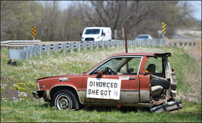

Приватним особам
-
Сімейні справи
Сімейні спори відносяться до конфліктних та емоційних категорій справ, оскільки сторонами конфлікту виступають пов’язані родинними зв’язками особи – чоловік і дружина, діти та батьки, інші близькі родичі
Дізнатись більше -
Спадкові справи
Одна з найскладніших сфер в юриспруденції, оскільки поєднує значну кількість супутніх правових категорій та взаємопов’язане з такими галузями права як сімейне, житлове, земельне, податкове і навіть корпоративне
Дізнатись більше -
Майнові справи
Суспільні відносини з приводу належності, використання чи переходу нерухомого і рухомого майна та інших матеріальних благ від одного суб'єкта до іншого
Дізнатись більше -
Справи по нерухомості
(Купівля – продаж, міна, дарування, оренда житлових та нежитлових приміщень, будівель, споруд; купівля – продаж та оренда землі, тощо)
Дізнатись більше
Підприємствам
-
Податкові справи
Будь-яка податкова перевірка платника податку може закінчитися донарахуванням податкових зобов’язань та штрафних санкцій
Дізнатись більше -
Господарські спори
Юридично грамотний супровід господарських справ є запорукою безпеки підприємницької діяльності юридичної особи чи підприємця
Дізнатись більше -
Реєстрація ТОВ
Товариство з обмеженою відповідальністю є найпоширенішою організаційно – правовою формою ведення підприємницької діяльності в Україні
Дізнатись більше -
Ліквідація підприємства
Позбутися неприбуткового чи проблемного підприємства можна шляхомпродажу корпоративних прав, ліквідації або банкрутства
Дізнатись більше

Горбай Роман Степанович
Адвокат Горбай Роман Степанович здійснює адвокатську практику на підставі свідоцтва про право на зайняття адвокатською діяльністю № 1391 від 24 вересня 2008року. Загальний юридичний стаж адвоката становить більше сімнадцяти років, понад дванадцять з яких – адвокатська практика.
Здійснює адвокатську практику на підставі свідоцтва про право на зайняття адвокатською діяльністю № 1391 від 24 вересня 2008року. Загальний юридичний стаж адвоката становить більше сімнадцяти років, понад дванадцять з яких – адвокатська практика.
Спеціалізація – судове представництво в сімейних, спадкових, цивільних та комерційних справах.
Чому клієнти обирають нас?
-
Компетентність
Ефективне використання набутого практичного досвіду та теоретичних знань є запорукою надання кваліфікованої правової допомоги
-
Досвід
Багаторічна практика та безперервне навчання, сформували навики, що відповідають високим стандартам професії
-
Результат
Робота Адвоката спрямована на отримання Клієнтом прогнозованого результату, незважаючи на виникнення можливих ускладнень в процесі виконання доручення
Блог
Останні публікації
-
Назва категорії
9 червня 2023
Четверта черга спадкоємців за законом. Як довести факт проживання однією сім’єю?
Коротко про спадкування за законом. Спадкуванням вважається перехід прав ...
Читати даліНазва категорії
9 серпня 2022
Поділ майна подружжя. Як поділити незавершене або самочинне будівництво?
Поділ спільного майна подружжя є складним і багатоаспектним процесом, особливо, ...
Читати даліНазва категорії
14 серпня 2021
Поділ майна подружжя. Як поділити автомобіль після розлучення?
За роки незалежності автомобіль став більш доступним для громадян України, однак, ...
Читати далі